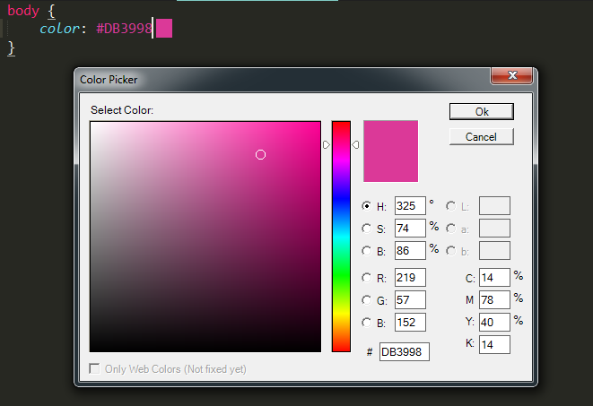

Sublime Text là công cụ toẹt cmn vời
AUGUST 13, 2019 | CODING | 4Một vài plugin và phím tắt để biến bạn trở thành master Sublime Text
Lời mở đầu:Trước hết thì Sublime Text là cái gì mới được chứ nhỉ ? Thực ra ẻm là một công cụ, một phần mềm rất rất là quen thuộc với giới lập trình viên, đặc biệt là lập trình Web.
Sublime Text là một Code Editor khá mới, tuy miễn phí mà mạnh mẽ, hỗ trợ rất nhiều tính năng thú vị. So với Atom hay VSCode (Các Code Editor khác), Sublime Text chiếm ưu thế hơn hẳn nhờ tốc độ nhanh, giao diện đơn giản, và có đầy đủ các tính năng mạnh mẽ. Có lẽ là vậy mà mình rất thích ẻm ^^.
Ví dụ như là:
- Phiên bản mới nhất Sublime Text 3 miễn phí (thực ra là bản unregistered, bạn có thể mua license hoặc crack, nhưng thế là đủ dùng rồi).
- Nhẹ, khởi động nhanh, tốn ít tài nguyên.
- Hỗ trợ nhiều plugin mạnh mẽ bởi cộng đồng developer đông đảo.
- Giao diện đơn giản, tinh tế, có sẵn và hỗ trợ cài đặt nhiều theme.
Trong bài viết này, tui sẽ chia sẻ những phím tắt và plugins hỗ trợ để biến Sublime Text thành một công cụ toẹt cmn vời, tăng năng suất code, biến những dòng code không còn nhàm chán nữa.
Note: Ứng dụng được cài đặt và hướng dẫn trên nền tảng HĐH Windows nhé, cái khác tui chưa trải nghiệm ^^
Xong phần mở bài, đến thân bài nào
Trước hết phải cài đặt phiên bản mới nhất Sublime Text 3 đã. Bạn nên chọn download bản setup thay vì portable nhé. Tui để Link ở đây luôn, đỡ phải tìm:
Sau khi tải về, chạy file setup thôi. Chỗ này cũng đơn giản mà. Giao diện của Sublime Text 3 sẽ như thế này:
Như các bạn thấy đấy, nhìn chả có gì cả. Để thế mà code thì phải gọi là cực vc. Do đó, ta phải cài một số Plugin đã.
Nhưng trước hết hãy để ý hơi nhiều nhiều phím tắt dau đây :
PHÍM TẮT:
| Tổ hợp phím tắt | Miêu tả |
|---|---|
| 1. Chung | |
| Ctrl+Shift+P | Mở Command Prompt (Cái này là đặc trưng rồi và sử dụng khá nhiều đấy) |
| Ctrl + K + B | Ẩn / Hiện Side Bar |
| Ctrl + Alt + V | View In Brower ( Điều kiện đã cài plugin View In Brower) |
| 2. Chỉnh sửa | |
| Ctrl + X | Cắt dòng đang đặt con trỏ |
| Ctrl + C, Ctrl + V | Bá đạo quá, thôi đéo trình bày |
| Ctrl + Shift + K | Xóa dòng đang đặt con trỏ |
| Ctrl + Shift + Enter | Thêm dòng phía trên con trỏ |
| Ctrl + Enter | Thêm dòng phía dưới con trỏ |
| Ctrl + Shift + ↑ | Đảo dòng hiện tại với 1 dòng bên trên |
| Ctrl + Shift + ↓ | Đưa dòng hiện tại xuống dưới 1 dòng |
| Ctrl + L | Bôi đen cả dòng và đưa con trỏ xuống dòng tiếp theo |
| Ctrl + D | Bôi đen từ đang được trỏ ( Double Mouse Click xịn hơn ^^) |
| Ctrl + K + K Ấn giữ Ctrl rồi ấn 2 lần K |
Xóa hết bắt đầu từ vị trí con trỏ đến cuối dòng |
| Ctrl + ] hoặc phím Tab | Lùi sang bên phải dòng hiện tại vào trong 1 tab |
| Ctrl+ [ | Tiến về bên trái dòng hiện tại 1 tab |
| Ctrl + Shift + D | Nhân đôi dòng hiện tại hoặc khối lệnh được bôi đen (Dùng nhiều) |
| Ctrl + J | Nối dòng phía dưới xuống cuối dòng hiện tại của con trỏ |
| Ctrl + / | Đặt cả dòng code vào comment |
| Ctrl + Z | Trở lại thao tác vừa thực hiện |
| Ctrl + Y | Lấy lại những thao tác vừa bị Undo |
| Ctrl + Space | Bật gợi ý |
| 3. Điều hướng | |
| Ctrl + P | Mở nhanh file bằng tên |
| Ctrl + ; | Đi đến thẻ cần tìm |
| 4. Tìm kiếm và thay thế | |
| Ctrl+F | Tìm |
| Ctrl+H | Thay thế |
| Ctrl+Shift+F | Tìm trong các file đang mở |
| 5. Tabs | |
| Ctrl+Shift+T | Mở tab đã đóng gần nhất |
| Ctrl+Tab | Di chuyển qua lại giữa các tab |
| Ctrl+W | Đóng tab hiện tại |
| Alt+[NUM] | Đi tới tab thứ [NUM] |
| 6. Chia màn hình | |
| Alt+Shift+ [NUM] | Chia màn hình thành [NUM] cột |
| Alt+Shift+5 | Chia màn hình thành grid gồm 4 groups |
| Alt+Shift+8 | Chia màn hình thành 2 hàng |
| Ctrl+[NUM] | Đi tới group thứ [NUM] |
Giờ đến các Plugin giúp tăng tốc độ code và giúp ngầu lòi hơn :
Cách cài đặt: Ấn Ctrl + Shift + P để mở Command Prompt và gõ tên vào thôi
1. Package Control
Nhấn tổ hợp phím Ctrl + Shift + P để mở cửa sổ Command Prompt. Gõ Install Package, chọn dòng đầu tiên, xem hướng dẫn bên dưới:Done. too easy, right ?
2. EMMET
Đương nhiên rồi, Emmet là một plugin không thể thiếu được đối với các lập trình viên Web Front-End. Vì sao á, nó gợi ý code nhiều, giúp việc lập trình HTML, CSS, JS,... dễ dàng hơn, tăng tốc độ code.
Cài đặt lại dễ vl ra, ấn Ctrl + Shift + P, gõ Package Control: Install Package, Enter rồi gõ Emmet rồi lại Enter, tham khảo bên dưới:
Chú ý cái thanh góc dưới trái thể hiện đang cài đặt đó.
3. Các gói snippets hữu ích
Các gói snippets tùy từng ngôn ngữ sử dụng mà sẽ đầy đủ hơn cả Emmet. Tùy từng nhu cầu, các bạn chọn các gói Snippets tương ứng:
- HTML Snippets
- Với CSS, bạn chỉ cần cài CSS Snippets là có hỗ trợ CSS, LESS, SASS và Stylus.
- JavaScript Snippets
- Bootstrap Snippets
- ReactJS Snippets, AngularJS Snippets, VueJS Snippets,…
Demo tý nhể:
4. View in Brower
Tiện ích này giúp bạn xem ngay trang Web đang code dở trên trình duyệt. Bạn chỉ cần click chuột phải chọn View in Brower
5. Side Bar Enhancements
Cung cấp một Side Bar đẹp hơn. Phím tắt để ẩn/ hiện Side Bar là Ctrl + K + B.
6. Color Highlighter
Ai code CSS sẽ rất thích cái này, support hiển thị màu của mã luôn. Rất tiện lợi.
7. Color Picker
Rất tiện cho việc code CSS, chỉ cần ấn Ctrl + Shift + C là show ra bảng màu để chọn một cách dễ dàng. 
8. Language Packs
Sublime Text có tích hợp cho hơn 50 ngôn ngữ nhưng có một số framework hoặc các ngôn ngữ web dev thích hợp chưa được hỗ trợ. Nhờ vào tính chất plugin của trình biên tập, cộng đồng có thể tạo và sử dungk các gói cho bất kỳ ngôn ngữ lập trình nào. Chẳng hạn như:
- AngularJS
- TypeScript
- Babel (React)
9. Bracket Highlight
Plugin này chỉ ra cho bạn vị trí thẻ đóng và thẻ mở ( trong lập trình HTML í ).
Demo:
10. Hmm còn vài cái hay ho nữa nhưng tui quên mất tên rồi =)))
Lời kếtĐối với một lập trình Web thì Sublime thiệt là 1 Code Editor toẹt cmn vời nhể. Nghe nói nó được tích hợp cho hơn 50 ngôn ngữ cơ đấy, chả biết những gì mà lắm vậy. Bên cạnh đó cũng phải nhắc đến một bạn đồng hành đến từ Microsoft là Visual Studio Code cũng có những tính năng tương tự. À nó còn có cái feature cực hay là Auto Save, Sublime Text éo có cứ viết được 1 dòng là phải thò tay ấn Ctrl + S. Bao giờ rảnh rảnh tui sẽ vọc về VS Code xem thế nào. Chào Thân ái và hẹn gặp lại ^^
p/s: Bài viết có đi tham khảo + chôm chỉa từ các web khác: viblo.asia, ehkoo.com, sublimetext.vn, ...